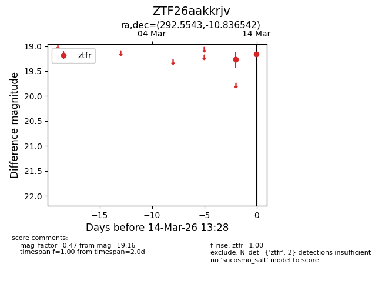
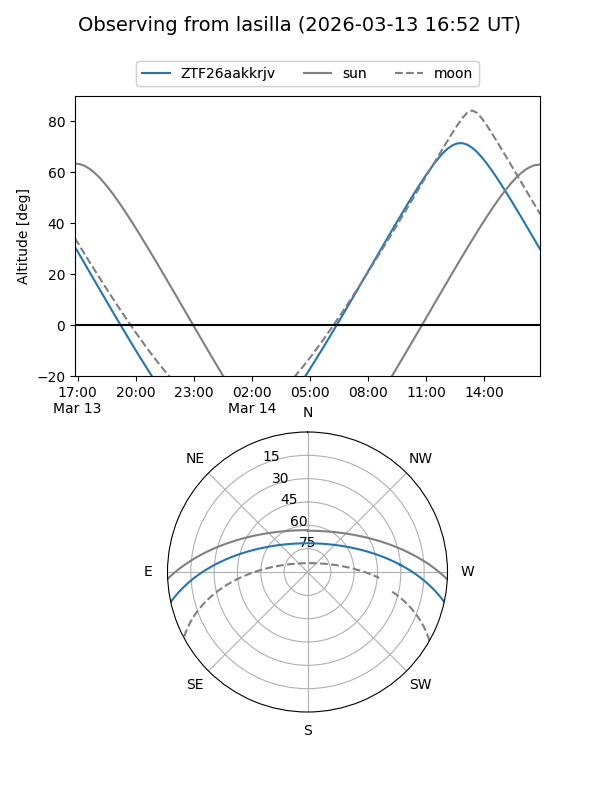
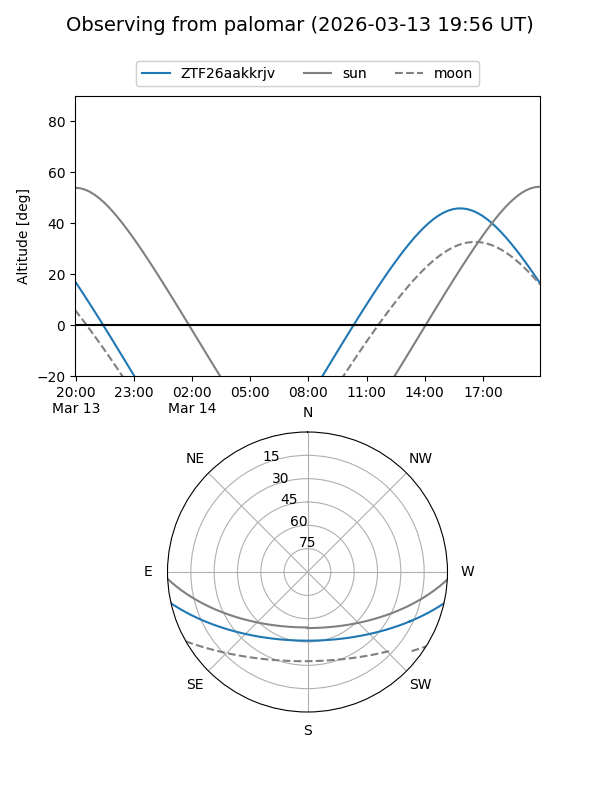

ZTF26aakkrjv
Target ZTF26aakkrjv at 2026-03-14 13:31
Aliases and brokers:
FINK: link
Lasair: link
ALeRCE: link
alt names
ZTF26aakkrjv (ztf,fink_ztf)
Coordinates:
equatorial (ra, dec) = 292.5543,-10.83654
equatorial (HMS+DMS) = 19:30:13.04,-10:50:11.55
galactic (l, b) = (27.5091,-13.46966)
Flags:
Photometry:
last ztfr=19.16
2 ztfr detections
Lightcurve

Visibility


Additional plots